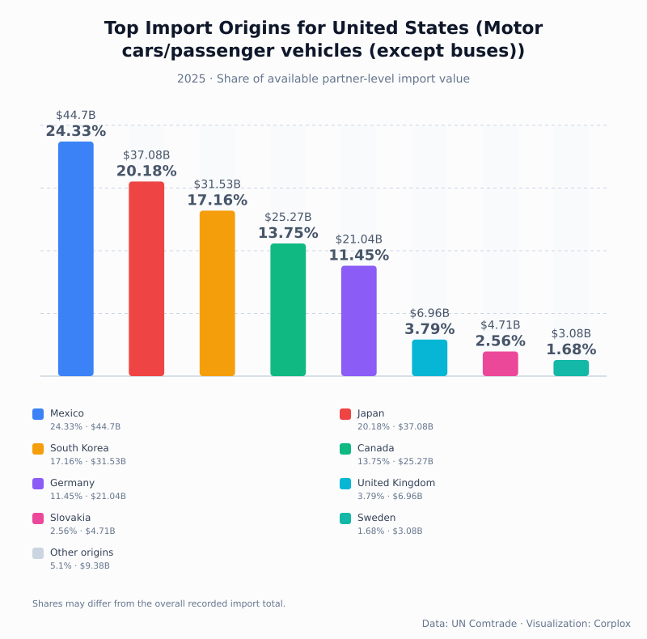
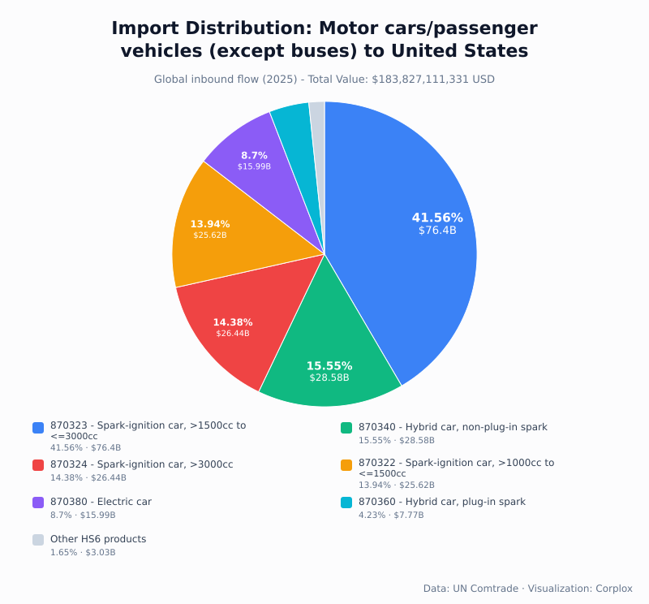

Automotive trade · 2025 customs data
Where Did America's Imported Cars Come From in 2025?
Mexico led the country ranking. And five origins accounted for almost 87% of the available partner-level import value.
When people think about imported cars in the United States, the first examples are often Japanese and German brands. But where a brand is based and where a particular car arrives from are different questions.
In the 2025 trade records, Mexico was the largest recorded source of passenger car imports into the United States.
Total U.S. imports under the passenger vehicle category HS 8703 amounted to $183.83 billion. The category focuses on cars and other vehicles principally intended to carry people; it does not cover every truck or separately classified automotive component.
A small group of countries dominated the ranking
Mexico's recorded import value was $44.70B, followed by Japan at $37.08B, South Korea at $31.53B, Canada at $25.27B and Germany at $21.04B.

Those five countries accounted for 86.87% of the available country-level observations by value. After Germany, the ranking dropped to the United Kingdom at $6.96B, Slovakia at $4.71B and Sweden at $3.08B.
Mexico and Canada together represented almost $70B in recorded passenger car imports. That says quite a lot about how connected automotive production and trade are across North America.
Car brands are not countries of manufacture
A U.S. company can produce cars in Mexico. A Japanese or German manufacturer may have factories across several countries. Import records describe the country associated with a customs flow, not the nationality of the brand or where the profits end up.
The ranking also should not be confused with the entire automotive supply chain. For example, the relatively small $1.80B of passenger car imports recorded from China under HS 8703 tells us very little about China's role in batteries or automotive components, which can fall under other product codes.
What types of cars were imported?
The same dataset can be broken down by vehicle type. The largest single category was gasoline cars with engines over 1,500cc and up to 3,000cc, at $76.40B or 41.56% of HS 8703 import value.
Non-plug-in gasoline hybrids accounted for $28.58B (15.55%), gasoline cars over 3,000cc for $26.44B (14.38%), and gasoline cars over 1,000cc and up to 1,500cc for $25.62B (13.94%). Fully electric cars represented $15.99B (8.70%), while plug-in gasoline hybrids represented $7.77B (4.23%).

That 8.70% figure for electric cars is a share of import value. It is not the share of electric vehicles sold in the United States. Domestically manufactured cars are outside the import figures, and a share measured in dollars is different from one measured in vehicles.
Imports declined from 2024
The recorded value of U.S. passenger car imports fell from about $219.50B in 2024 to $183.83B in 2025, a 16.25% decrease. Exports in the same category declined from about $59.20B to $53.49B.
The customs values establish that change, but not its cause. Vehicle counts, prices and changes in the product mix would need to be examined before attributing the decline to any one factor.
The main takeaway
U.S. passenger car imports are concentrated in a handful of recorded origins, with Mexico ahead of Japan and South Korea in 2025. Meanwhile, the product breakdown is still led by conventional gasoline cars, with hybrids significant and fully electric vehicles a smaller share of import value.
Neither chart tells the complete story of American vehicle sales or ownership of manufacturing facilities. Together, though, they give a useful view of the passenger cars crossing into the United States.
Source: UN Comtrade, annual 2025 merchandise trade data, HS 8703 and underlying HS6 product categories.
Method: Country percentages are based on available partner observations. Product-type percentages refer to the recorded overall HS 8703 import value; these datasets are compiled separately.
Full data: U.S. passenger car trade report at CorpLox.